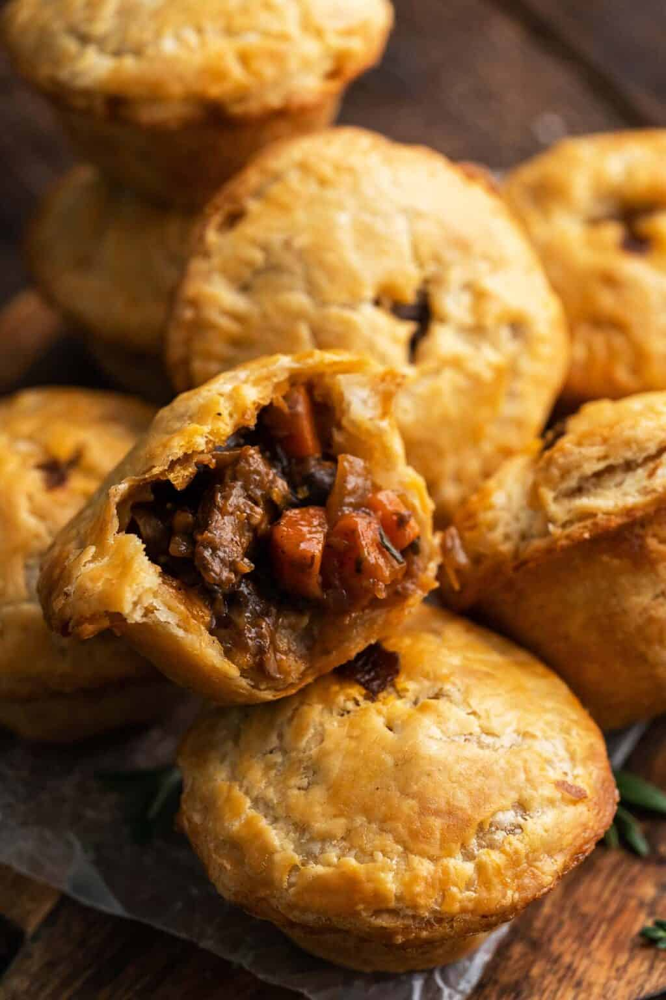

Steak and Ale Pie

Golden, flaky, buttery pie crust with tender pieces of beef and vegetables in a thick, savory gravy. It really doesn't get much better than this!
Don't be intimidated, this recipe is not as hard as you might think. I recommend making the shortcrust pastry and beef stew filling the day before, so assembling and baking these mini beef pot pies is a breeze.
These flavorful little pockets are a full meal on their own. And what's even better, they're a portable full meal! However, you can serve them up with hearty side dishes like mashed potatoes and buttered peas for a Sunday supper spread to warm up any winter evening.
Ingredients
- 2 1/2 cups all-purpose flour
- 3/4 teaspoon salt
- 1 cup unsalted butter (chilled and diced)
- 3/4 cup iced water (plus more as needed)
- 4 cups English beef and ale stew (cooled to room temperature)
- 1 large egg (lightly beaten with 1 Tbsp water)
Steps
- Lightly brush the wells of a muffin pan with butter.
- Whisk together the flour and salt in a large bowl. Cut in the butter with a fork, a pastry cutter, 2 butter knives, or your fingertips. It should look crumbly, with some pieces of butter the size of small peas.
- Drizzle the water in a little at a time, mixing as you go (you can use a fork to mix, but it works best mixing with your fingertips). Add just enough water so it comes together to form a ball of dough (you may need more or less water).
- Divide the dough into 2 equal parts. Roll each into a ball, flatten each ball slightly into a disk, wrap them in plastic wrap, and refrigerate until chilled, about 30 minutes.
- Place 1 disk of dough onto a floured work surface. Working from the center out, roll the dough out to a rectangle about 11 to 12 by 16 to 18 inches.
- To make the pies in a regular muffin pan, you will need 8 (5-inch) circles to get pressed into the muffin wells, and 8 (3-inch) circles for topping. Stamp out as many as you can, and then repeat this process with the second ball of dough. Gather the dough scraps, re-roll the dough, and stamp out more if needed.
- Gently press each 5-inch circle of dough into a muffin well in a muffin pan. If you're using a standard-sized muffin pan, the dough should come up over the top a little, which is perfect. Use a fork to poke a few holes in the bottom crust of each tart.
- Fill each muffin well to the top with beef and ale stew (about 3 tablespoons per pie), making sure the filling is compact and there are no air bubbles.
- Lightly brush the top ring of dough with eggwash. Place 1 (3-inch) dough circle on top of each pie. Gently crimp the outside with a fork. Lightly brush each dough circle with eggwash, discarding any extra eggwash.
- Bake in an oven preheated to 375F until the tarts are golden, about 35 to 40 minutes.
- Let them cool for 15 minutes in the tray before removing (if you run a paring knife along the outside of each tart, they should pop right out).
Return to Top
Return to Table of Contents